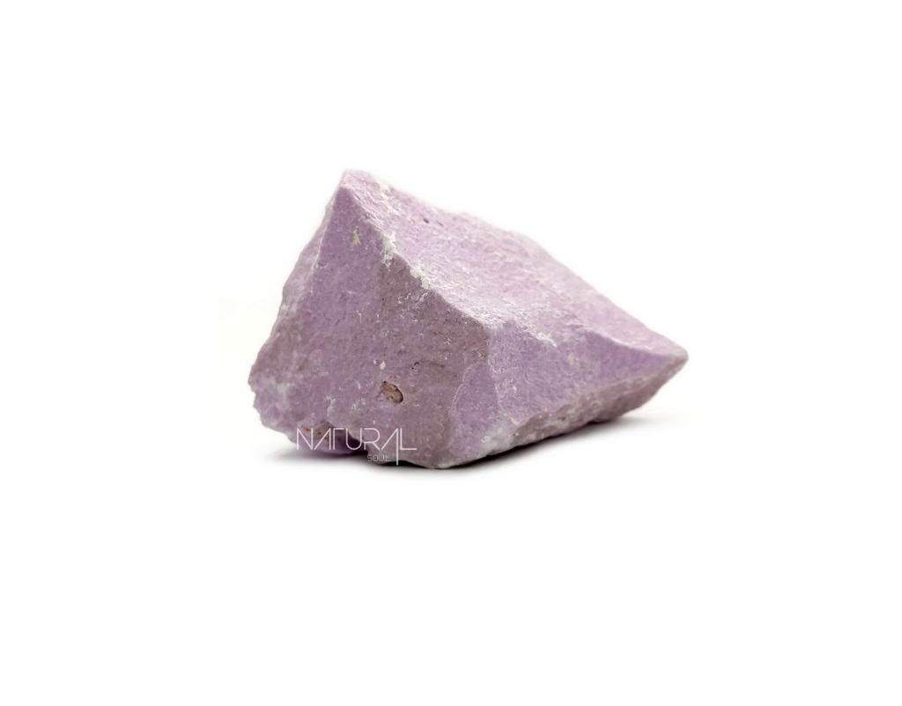
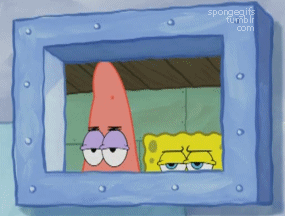

ALGUNS ESCLARECIMENTOS
HÁ MUITAIS PERGUNTAS A SEREM RESPONDIDAS, EU SEI! MAS BUSCAREI FAZER ISSO A SEGUIR...
ANTES DE INICIAR, ALGUMAS BREVES CONSIDERAÇÕES. ESCREVER ESSA NARRATIVA DIGITAL FOI BASTANTE DESAFIADOR. EM PARTICULAR, ESCOLHER A MELHOR MANEIRA DE CONTAR A MINHA HISTÓRIA. MUITAS IDEIAS FORAM MODIFICADAS COM O INTERCÂMBIO DE EXPERIÊNCIAS NA SALA DE AULA (ESPERO QUE PARA MELHOR). MAS SEM DELONGAS, VAMOS PROSSEGUIR.
PRIMEIRO E MAIS IMPORTANTE PONTO: POR QUE A FORMIGA?
ENTÃO, TEMOS DUAS IMAGENS QUE REPRESENTAM: UMA FORMIGA E A ESTÁTUA DE UM HOMEM PENSANDO. CURIOSAMENTE A OBRA SE CHAMA THINKER (PENSADOR). MAS, ATÉ ONDE SABEMOS, UMA PEDRA NÃO POSSUI NENHUM NÍVEL DE CONSCIÊNCIA. ISSO É VÁLIDO SE CONSIDERAMOS QUE SERES CONSCIÊNTES EXPRESSÃO ALGUM TIPO DE MANIFESTAÇÃO. SE ESSE ADENDO NÃO FOR COSIDERADO, NÃO PODEMOS DIZER QUE PEDRAS NÃO POSSUEM CONSCIÊNCIA.
JÁ A FORMIGA, EMBORA NÃO EXPRESSE NÍVEIS SUPERIORES DE COGNIÇÃO, ELA MANISFESTA SUA EXISTÊNCIA (E INESISTÊNCIA, CASO A GENTE PISE NELA). MAS, A JUSTIFICATIVA DA ESCOLHA DESSAS IMAGENS NÃO FOI ESSA. A SIMPLES EXISTÊNCIA DA FORMIGA ATRIBUI UM OUTRO SENTIDO À REPRESENTAÇÃO DO PENSADOR: ELE PASSA A SER UM OBSERVADOR. O QUE ISSO TEM HAVER COM AS TDIC? NÃO FAÇO IDEIA KKKKK.
BOM, SE ESTOU ESCREVENDO, É PORQUE CONSEGUI CRIAR UMA RELAÇÃO... SEGUINDO A LÓGICA QUE MENCIONEI ACIMA, NA QUAL A IMAGEM REPRESENTA UMA ESTÁTUA, ESTA SERÁ UM OBSTÁCULO PARA A FORMIGA E ISSO NÃO QUER DIZER NADA. POR OUTRO LADO, SE CONSIDERAMOS A ESTÁTUA COMO O PENSAR, PROPRIAMENTE DITO, A FORMIGA PODE SER CONSIDERADA UMA DISTRAÇÃO. QUANDO A GENTE UTILIZA AS TDIC ACRITICAMENTE, SEM CONSIDERAR SUAS DIMENSÇÕES POLÍTICAS, SOCIAIS E HISTÓRICAS, NOS COLOCAMOS APENAS COMO OBSERVADORES DO MUNDO.
NESSA MESMA PERSPECTIVA, A FORMIGA, CONSIDERADA UM RUÍDO NO ATO DE PENSAR, POR MEIO DE SUA MERA EXISTÊNCIA, INTERCRUZA A EXISTÊNCIA DO PENSADOR. OU SEJA, AO INTERAGIR COM O MUNDO, NOSSO SER SE TORNA COLETIVO E AMPLIADO. QUERO DIZER QUE O MESMO PODE SER VÁLIDO AO UTILIZARMOS AS TDIC, HAJA VISTO QUE ELAS NOS PERMITEM MANEIRAS DE SER NUNCA ANTES VISTAS PELA HUMANIDADE! MAS TODA ANALOGIA TEM SUAS LIMITAÇÕES. AS TDIC NÃO PODEM SER CONSIDERADAS COMO NEUTRAS, POIS ELAS ESTÃO CONTIDAS EM UM CONTEXTO ESPAÇO-TEMPORAL, CUJA CULTURA IMPLICA NA MANEIRA COMO TORNAMO-LHES PRESENTE.
COMO TODAS AS DÚVIDAS JÁ FORAM ESCLARECIDAS, VAMOS VOLTAR AGORA? 👉CLIQUE AQUI 🎢 👈